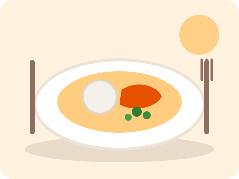
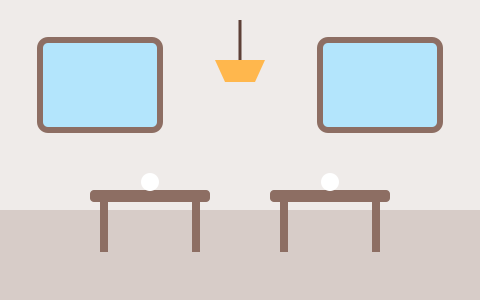

Muamba de galinha
Galinha cozinhada lentamente em molho de óleo de palma, com quiabos e funge.
6 500 KzCozinha tradicional angolana no coração de Luanda, desde 2010. Pratos feitos ao momento, com ingredientes frescos do mercado.

Galinha cozinhada lentamente em molho de óleo de palma, com quiabos e funge.
6 500 Kz
Abacate, tomate, cebola roxa e limão. Leve e fresca para começar.
2 500 Kz
Doce tradicional de coco e ovos, com um toque de canela.
1 800 KzO Kianda nasceu de uma cozinha de família. Hoje recebe quem quer comer bem, sem pressa, num espaço simples e acolhedor.
